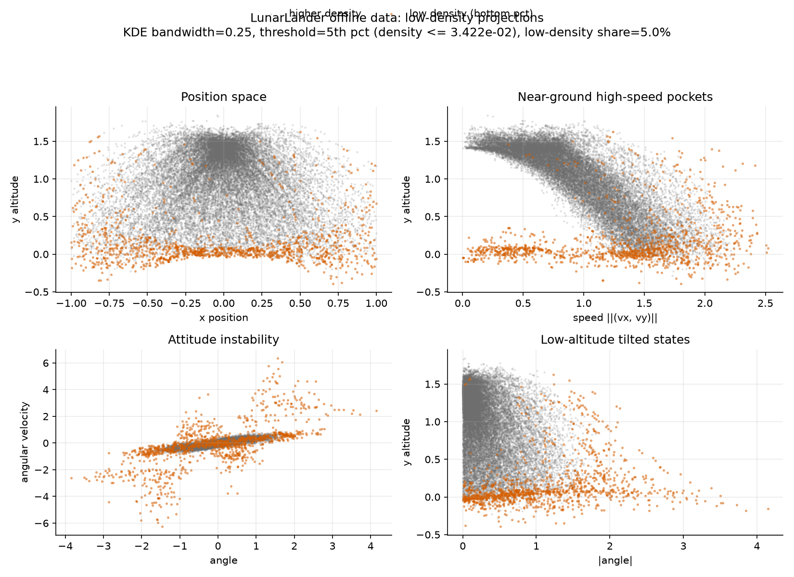
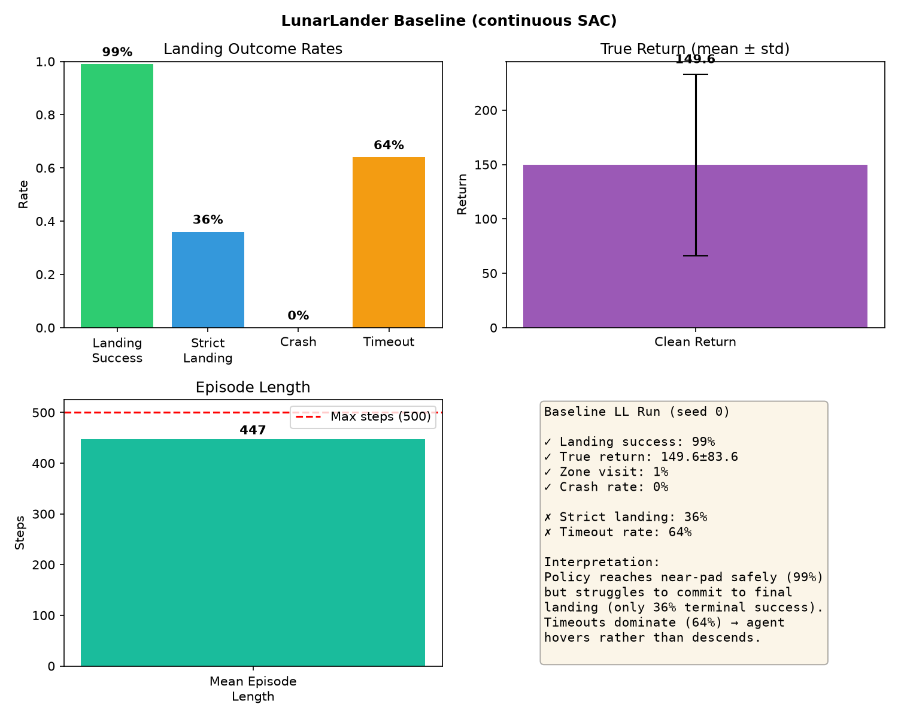
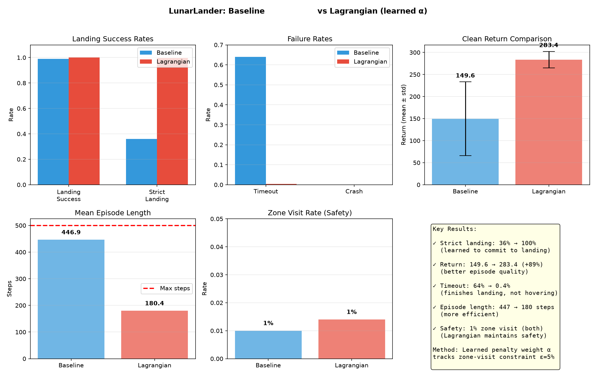
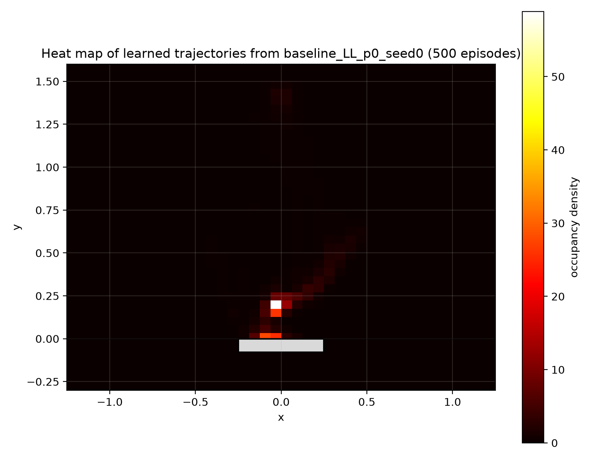
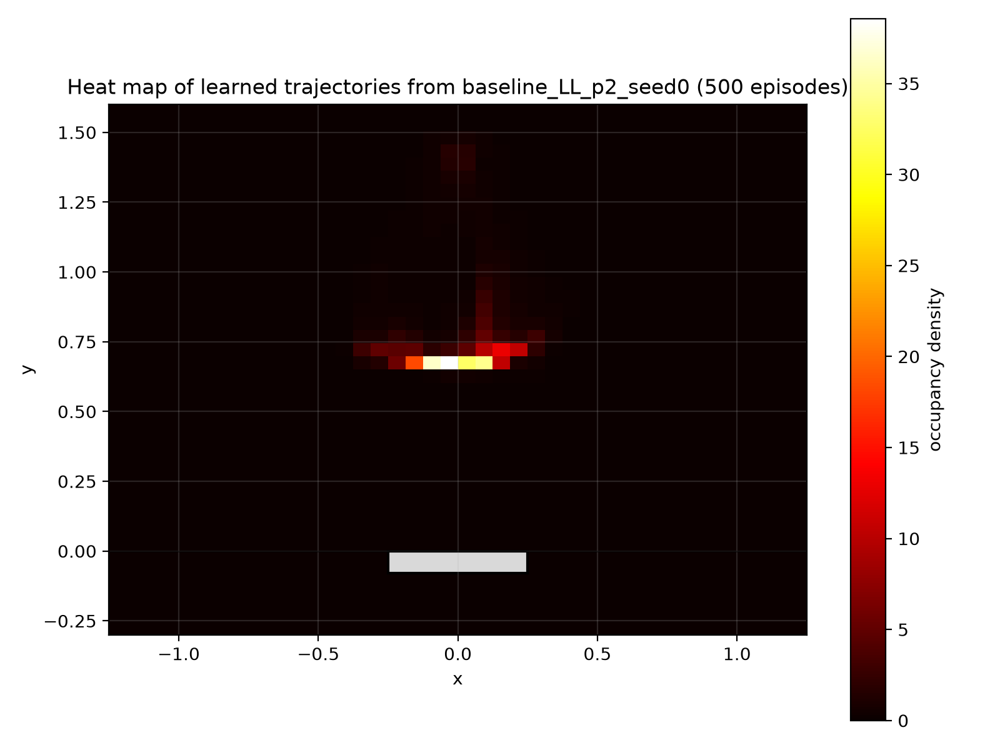
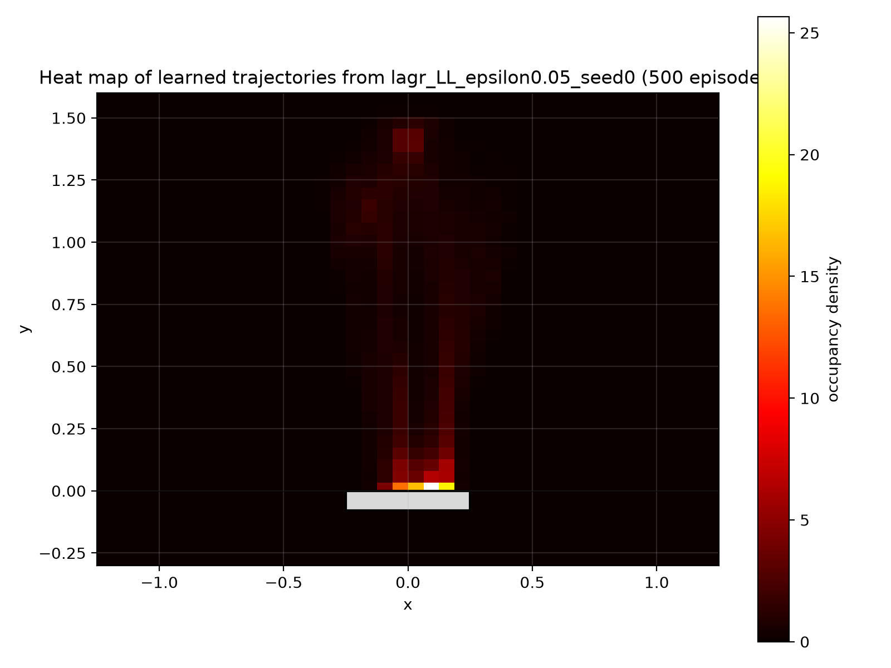

An end-to-end check of the new LunarLander setup, from the density-based safety signal to trajectory behavior under the trained policy.
The LL environment is not just another task. It adds a risk region near the pad and a density signal that should identify unsafe near-ground states.





